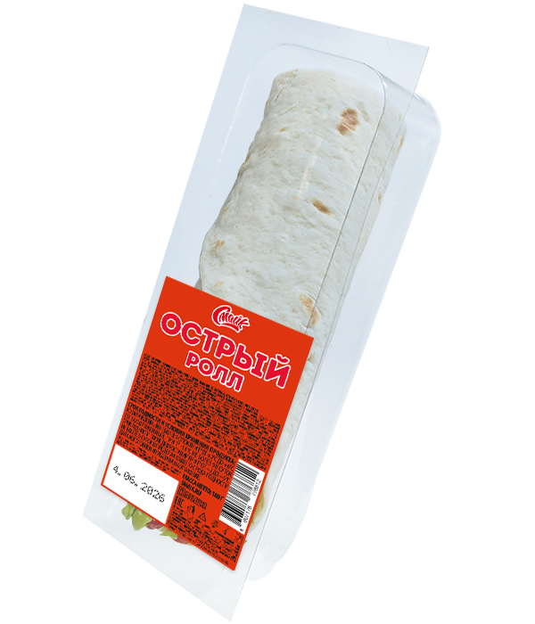

Ролл с куриным филе острый

Состав:
лаваш, куриное филе, майонез, сыр, перец Чили, капуста свежая, помидор.
Масса:
180 г.
Пищевая и энергетическая ценность в 100 г продукта (средние значения):
Белки
– 7,9 г.
Жиры
– 17,4 г.
Углеводы
– 19,3 г.
Калорийность
– 340 ккал / 1420 кДж.
Закрыть окно